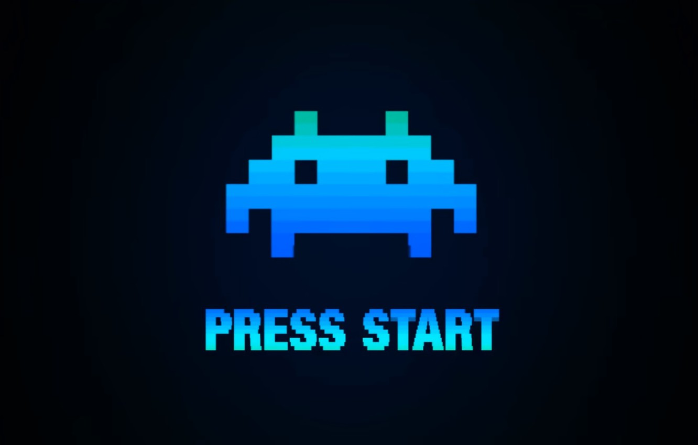
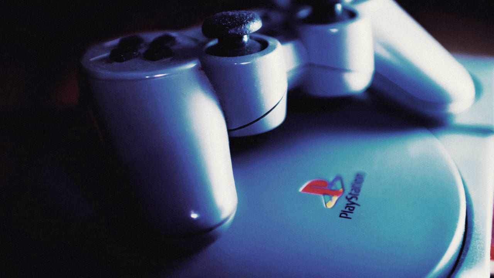
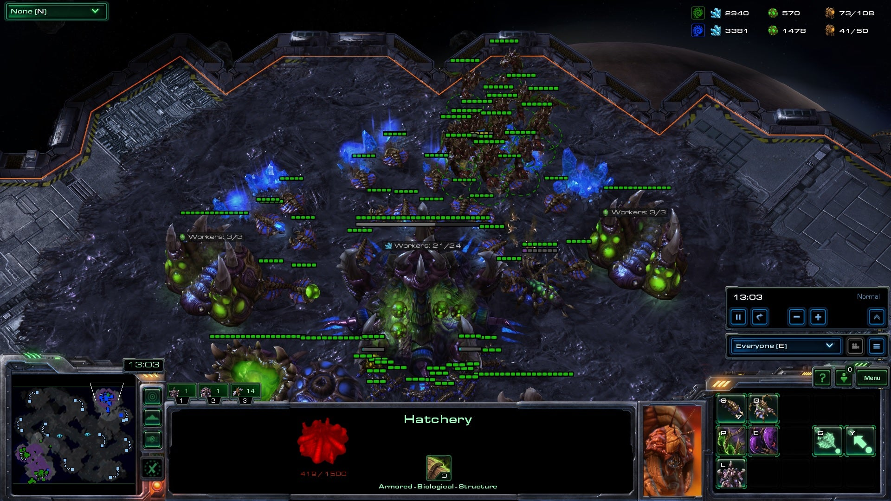
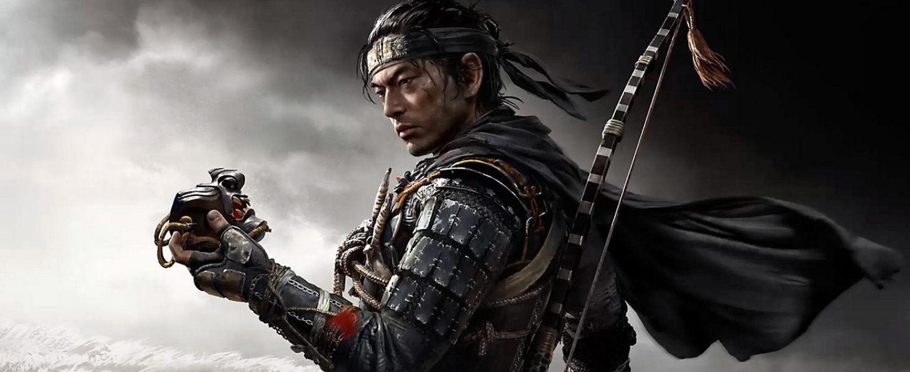

Quando tudo começou?
Vamos aprender um pouco sobre minha historia nos videogames!

Confira os tópicos dessa Aventura!
Tutorial
Neste site você irá acompanhar minha historia com os videogames, então pegue uma pipoca um refri e venha comigo nessa nova aventura!
Antes de começarmos algumas informações sobre mim, Me chamo Dario Jr, tenho 24 anos e estou aprendendo programação, minha paixão como devem ter percebido é Videogames e Programação, atualmente tenho um Ps4, Nintendo Switch e um Pc "Gamer"!
Mas chega de Enrolar bora para o que interessa!
START A NEW GAME

New Player
Tudo começou com meu primo que gostava de jogar e me apresentou esse mundo de jogos incrivel, posso dizer que o primeiro videogame foi o super nintendo e obviamente com Mario e Donkey Kong hahah.
Meu Primeiro Videogame
Meu primeiro videogame eu ganhei com 7 anos de idade e foi meu Playstation 1 lembro que nessa epóca meus jogos favoritos eram Crash bandicoot, Spyro e Homem Aranha.

Pro Player???
Então teve um momento da minha vida lá por 2012 aonde eu poderia ter virado pro player porem eu acabei desistindo pq ganhei um PS3 haha, vou explicar melhor tudo começpu com o jogo Starcraft 2 de PC aonde eu jogava muito e tinha um time pra jogar tbm, Já estava na liga Mestre falta apenas uma pra eu ir pra melhor liga do jogo, eu era bem focado no jogo e sempre dava meu melhor, só que tudo mudou quando ganhei um ps3 haha e essa chance de virar proplayer morreu ali em 2012 a 2013.
Mas sim eu cheguei a ganhar um dinheiro nessa epoca pouco mas foi muito divertido hehe


Level 7 ao 24
Então como viram meu "vicio" em games começou com 7 anos de idade meu historico de videogames foram esses:
Meus jogos favoritos de todos os tempos até hj são:
Bom atualmente eu tenho um Ps4, um Nintendo Switch e um "PC Gamer"!
Sim este é um site simples apenas para treinar meu HTML%CSS por isso pouco conteúdo!
